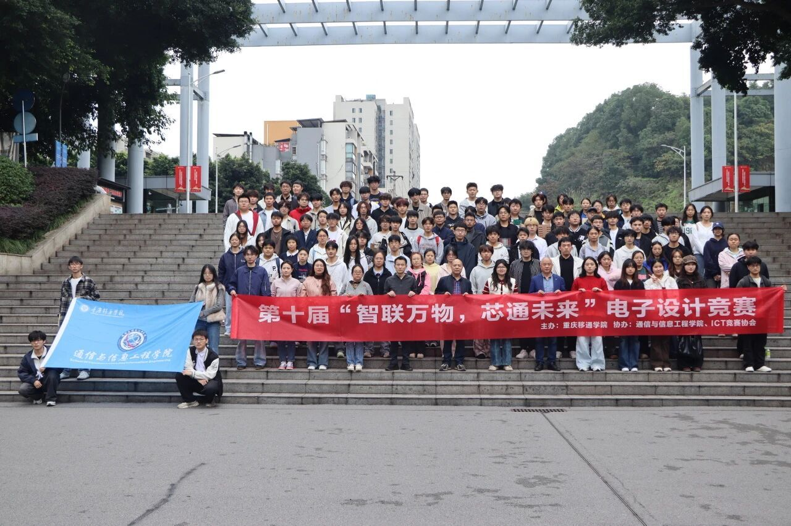
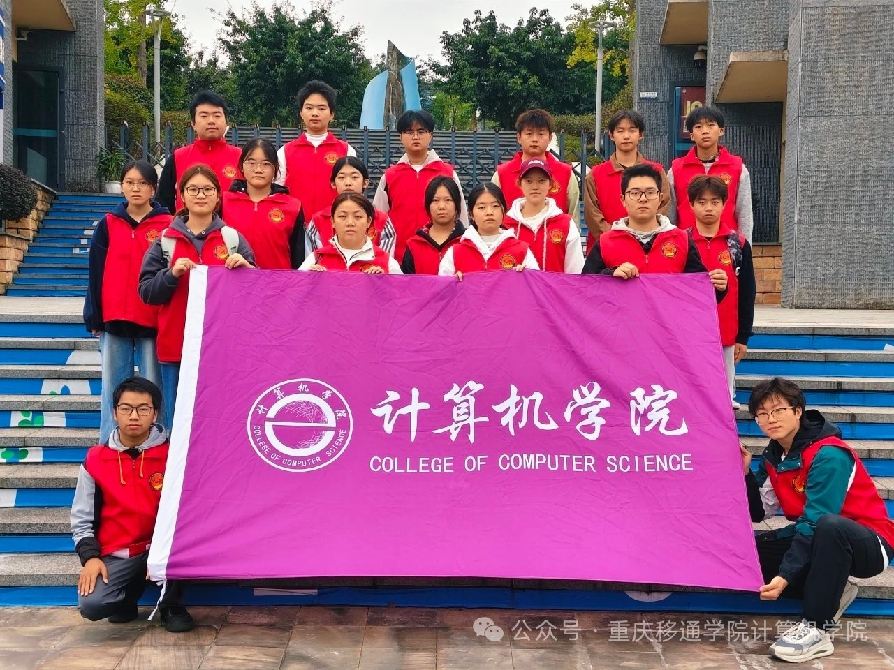
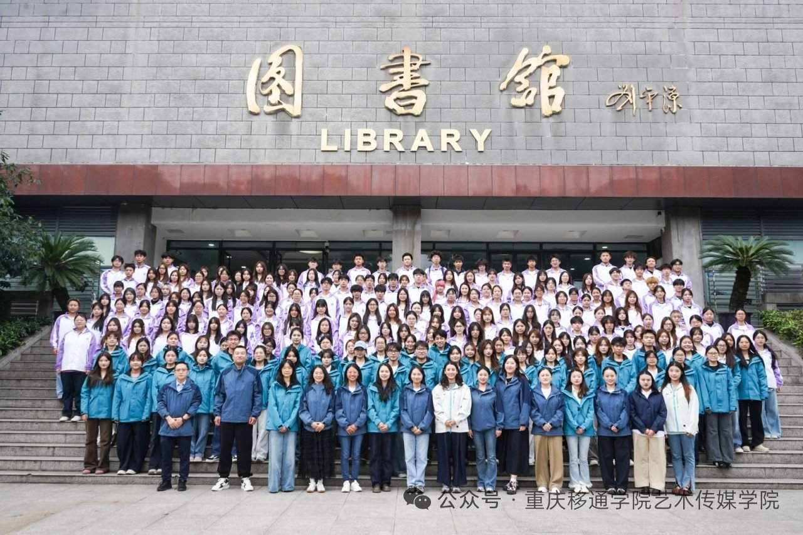
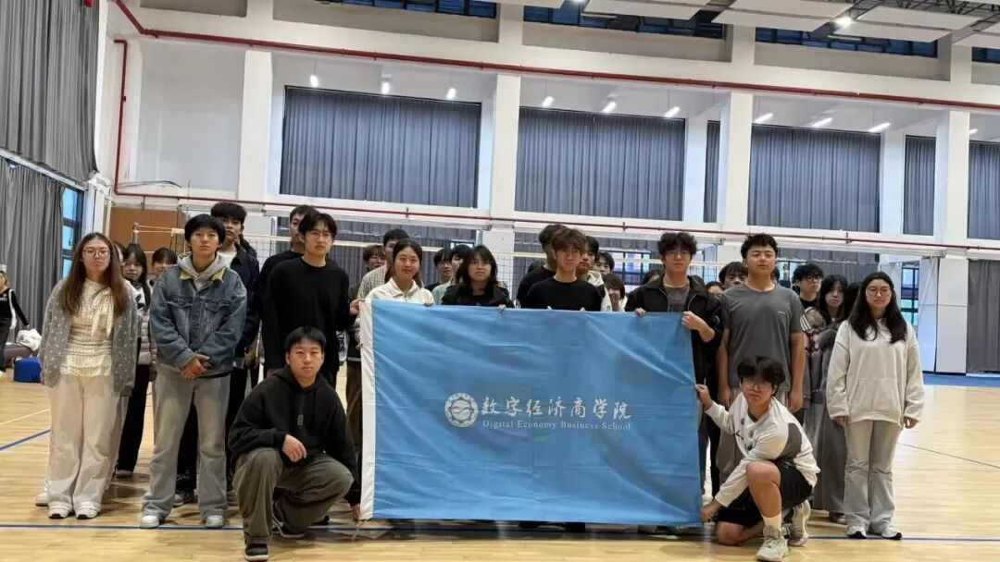
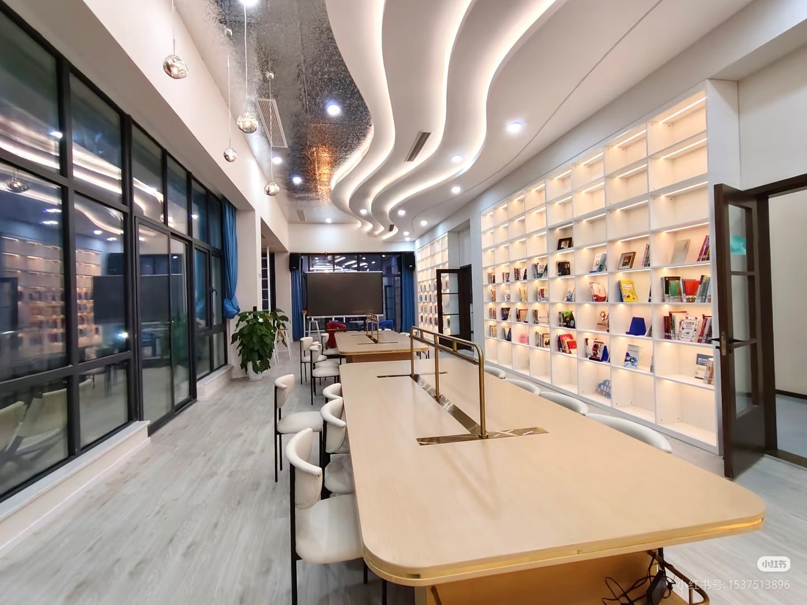
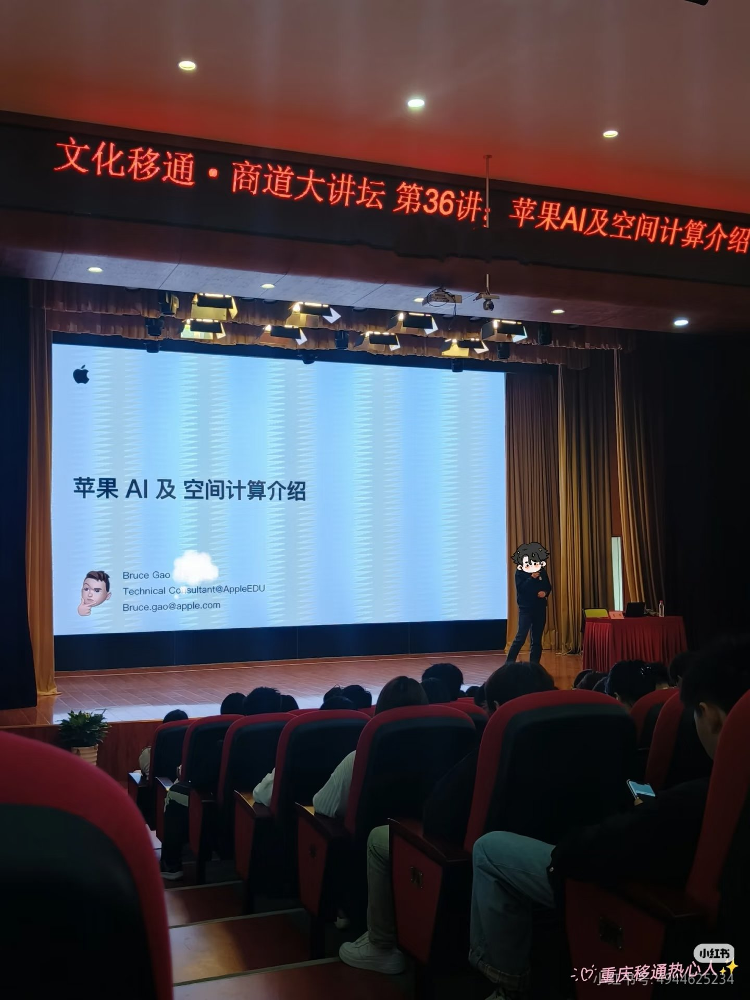

01FOUNDED
2000年
建校时间
LOADING / 校园信号接入中
点击任意位置进入
重庆移通学院 / CQYT
ADMISSIONS · CHONGQING
学校概况 / THE UNIVERSITY
从 2000 年出发，一所把“人的成长”放在大学正中央的高校，正以山水校园与书院社区，重新定义应用型人才的培养现场。
重庆移通学院（原重庆邮电大学移通学院）成立于 2000 年，是经教育部批准、由重庆市教委主管的全日制普通本科高校。
学校地处重庆市，建有合川、綦江两个校区，是一所独具特色的山水园林式书院制大学。围绕信息产业链人才需求，形成以工学为主，经、管、文、艺多学科交叉融合协调发展的专业体系。
学校创新构建“四位一体双院制”特色人才培养模式，以专业教育、通识教育、商科教育、完满教育为四维支撑，让专业在学院、成长在书院。
专业在学院，
THE CQYT WAY / 全员书院制
成长在书院。
2000年
建校时间
53个
本科专业
41000+
在校学生
776+
合作单位
271个
实习实训基地
一城山水，
两处校园。
数据整理自学校官网及公开资料，部分统计口径截至 2026 年 9 月；合作单位数据按赛题资料呈现。最终信息以学校官方发布为准。
育人特色 / THE CQYT MODEL
不是把学生塞进同一种模板，而是用五种相互咬合的育人场景，托举每个年轻人找到自己的成长坐标。
MAJOR EDUCATION
以信息产业岗位需求为坐标，把课堂、项目与产业现场连成完整的实践链路。
GENERAL EDUCATION
人文精神、科技进步、艺术审美与价值塑造，为专业能力之外打开更宽的认知边界。
BUSINESS EDUCATION
面向信息产业与中小企业，在真实商业项目中训练经营思维、市场判断和团队领导力。
COMPLETE EDUCATION
校园社团、志愿服务、艺术修养与竞技体育四大板块，让综合素质在真实场景里发生。
RESIDENTIAL COLLEGE
专业在学院，成长在书院。25 个书院构成社区化育人场，朋辈互助，师生共栖。
四种教育维度，加上一个书院制的成长空间。育人不是单点发力，而是一套持续发生的生态。
ONE STUDENT, WHOLE GROWTH院系专业 / FIND YOUR FIELD
从通信与信息，到计算机、艺术传媒、数字经济，在真实产业坐标里选择你的专业起点。

01 / COMMUNICATION & INFORMATION
代表专业

02 / COMPUTER SCIENCE
代表专业

03 / ART & MEDIA
代表专业

04 / DIGITAL ECONOMY BUSINESS SCHOOL
代表专业
以上为部分重点学院及代表专业展示，具体招生专业、计划与选考要求以学校当年官方发布为准。
办学成果 / PROOF OF GROWTH
被看见的每一项成绩，最终都回到学生身上。它们记录着一所学校持续向上生长的轨迹。
TOP 1
2022—2026 连续五年位居 ABC 中国民办大学排行榜第一。
ABC CONSULTING / TOP 1五四
获共青团系统授予基层团组织的最高荣誉，思政育人再添国家级认可。
共青团中央 / 国家级荣誉CCTV
作为全国就业创业典型，获央视《焦点访谈》栏目专访报道。
CCTV-13 / 就业创业典范高质量
第三方数据见证就业质量，毕业去向落实率常年位居重庆本科高校前列。
MYCOS / 就业质量亚洲
深耕中德合作办学，以三个教育部批准的中外合作办学项目连接全球。
GERMANY / 国际化荣誉信息整理自学校官网、官方新媒体及公开报道；数据截至 2026 年 9 月。
校园生活 / LIVE THE CAMPUS
在书院共享空间里相遇，在社团现场找到同频的人，在一场讲座里重新理解世界。大学，本该如此鲜活。

书院空间 / RESIDENTIAL COLLEGE社区共享、朋辈互助，把生活变成学习的一部分。
在热爱里，找到一群同频的人。

学术讲座 / OPEN LECTURE与思想者对话，拓宽认知的边界。
25 个书院，N 种大学生活。
你可以在移通，成为更完整的自己。
把成长，写进每一个关键词。